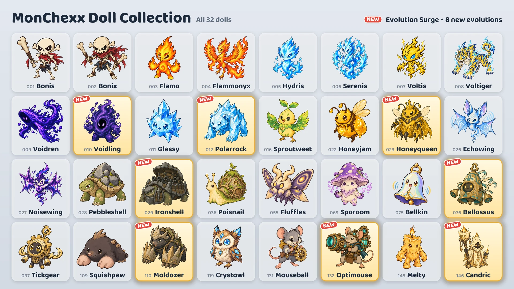

17 अक्टूबर को आठ नए इवॉल्यूशन जोड़े जा रहे हैं।

आठ नए इवॉल्यूशन
- वॉइडलिंग: वॉइड्रेन का इवॉल्व रूप · रक्षक / योद्धा
- पोलररॉक: ग्लासी का इवॉल्व रूप · रक्षक / योद्धा
- शहद रानी: शहद जैम का इवॉल्व रूप · मददगार / निशानेबाज़
- लोहा कछुआ: पत्थर कछुआ का इवॉल्व रूप · रक्षक
- घनघन: टनटन का इवॉल्व रूप · रक्षक
- फ़ौलादी नाखून: गुलगुल नाखून का इवॉल्व रूप · रक्षक / शिकारी
- ऑप्टिमाउस: माउसबॉल का इवॉल्व रूप · निशानेबाज़
- कैंड्रिक: मेल्टी का इवॉल्व रूप · मददगार / निशानेबाज़
पाने के तरीके
- क्लॉ मशीन (इवेंट): इवेंट के दौरान (17 से 24 अक्टूबर), लाइन के दोनों सिरों की दो मशीनों को छोड़कर हर मशीन में एक नया इवॉल्यूशन दो दूसरे खिलौनों के साथ रखा जाता है। इवेंट खत्म होने के बाद नए इवॉल्यूशन भी दूसरे खिलौनों जितनी ही दर से मशीनों में आते हैं।
- खिलौना एक्सचेंज: 10 एक्स्ट्रा खिलौनों से अपनी पसंद का खिलौना (चुनकर एक्सचेंज), या 3 एक्स्ट्रा खिलौनों से एक रैंडम खिलौना (रैंडम एक्सचेंज) लिया जा सकता है।
- खिलौना पैक: नए इवॉल्यूशन खिलौना पैक से भी निकल सकते हैं।
इवॉल्व खिलौनों का इस्तेमाल
- इवॉल्व खिलौना अलग से जमा किया जाने वाला खिलौना है, और मिलते ही उसे टीम में डाला जा सकता है।
- “अपनी टीम बनाओ” में खिलौना चुनकर मूल या इवॉल्यूशन से उसका रूप बदला जा सकता है।
- एक टीम में हर इवॉल्यूशन लाइन से सिर्फ़ एक खिलौना डाला जा सकता है।
- इवॉल्व खिलौने का लेवल उसके मूल रूप वाले खिलौने से अलग बढ़ता है।
नए खिलौने
“अटैक पावर के”, “स्किल पावर के” और “अधिकतम हेल्थ के” वाले आँकड़े खिलौने का लेवल बढ़ने के साथ बढ़ते हैं।
 वॉइडलिंग · रक्षक/योद्धा · रेंज 1 कदम
वॉइडलिंग · रक्षक/योद्धा · रेंज 1 कदम
- शून्य सोखना: अपनी अधिकतम हेल्थ, स्किल पावर के 200% और लड़ाई की शुरुआत वाली अधिकतम हेल्थ के 3% के जोड़ जितनी बढ़ाता है, और जितनी बढ़ी उतनी हेल्थ भरता है। फिर खुद से 1 कदम के भीतर के सभी दुश्मनों को अपनी अधिकतम हेल्थ के 10% जितना मैजिक डैमेज देता है। जब इसकी अधिकतम हेल्थ लड़ाई की शुरुआत वाली अधिकतम हेल्थ की 3 गुनी हो जाती है, तो यह दायरा 1 कदम बढ़ जाता है, और उसके बाद हर एक गुना और बढ़ने पर उतना ही और बढ़ता है। बढ़ी हुई अधिकतम हेल्थ लड़ाई खत्म होने तक रहती है।
- शून्य की दावत: 4 कदम के भीतर कोई दुश्मन जब भी एक्टिव स्किल इस्तेमाल करता है, 10 ऊर्जा पाता है।
 पोलररॉक · रक्षक/योद्धा · रेंज 1 कदम
पोलररॉक · रक्षक/योद्धा · रेंज 1 कदम
- पाला पटक: मौजूदा निशाने को स्किल पावर के 240% जितना फ़िज़िकल डैमेज देता है और उसे 1.5 सेकंड के लिए बर्फ़ में जमा देता है। बर्फ़ में जमा दुश्मन उतनी देर न कुछ कर पाता है, न ऊर्जा पाता है। निशाने के पीछे 2 कदम तक फैले शंकु जैसे इलाके के दुश्मनों को स्किल पावर के 180% जितना फ़िज़िकल डैमेज देता है, और उन पर पाला लगाता है, जो 6 सेकंड के लिए उनकी अटैक स्पीड 15% घटा देता है।
- क्रिस्टल त्वचा: इसे मिलने वाला मैजिक डैमेज 20% कम हो जाता है। यह लगातार मैजिक डैमेज पर भी लागू होता है, और मैजिक डिफ़ेंस लागू होने के बाद गिना जाता है।
 शहद रानी · मददगार/निशानेबाज़ · रेंज 3 कदम
शहद रानी · मददगार/निशानेबाज़ · रेंज 3 कदम
- शाही जेली: अपनी सभी कामगार मधुमक्खियों की हेल्थ उनकी अधिकतम हेल्थ के 10% जितनी भरती है और 3 सेकंड के लिए उनकी अटैक स्पीड 200% बढ़ाती है। फिर अगर मधुमक्खियाँ ज़्यादा से ज़्यादा गिनती से कम हों, तो पास की किसी खाली जगह पर 1 कामगार मधुमक्खी बुलाती है।
- मधुमक्खी सेना: ज़्यादा से ज़्यादा 3 कामगार मधुमक्खियाँ साथ रखती है। मधुमक्खियों के स्टैट्स शहद रानी के लेवल के साथ बढ़ते हैं, और सीमित गिनती के साथियों पर लगने वाले असर इन्हें नहीं चुनते। हर मधुमक्खी को हर सेकंड अपनी अधिकतम हेल्थ के 4% जितना मैजिक डैमेज मिलता है। शहद रानी के गिरने पर मधुमक्खियाँ बेकाबू हो जाती हैं, और उनका दिया हुआ और उन्हें मिलने वाला डैमेज 100% बढ़ जाता है।
- मधुमक्खी की हेल्थ 60 · मधुमक्खी की अटैक पावर 40 (Lv.1)
 लोहा कछुआ · रक्षक · रेंज 1 कदम
लोहा कछुआ · रक्षक · रेंज 1 कदम
- घूमती गोलाबारी: जिस दिशा में देख रहा है, वहीं से शुरू करके घड़ी की उलटी दिशा में एक-एक दिशा घूमते हुए 6 बार तोप दागता है। हर गोला उस दिशा में 2 कदम के भीतर के पहले दुश्मन को स्किल पावर के 500% जितना फ़िज़िकल डैमेज देता है। गोलों के बीच 0.5 सेकंड का अंतर होता है, जो अटैक स्पीड के हिसाब से बदलता है। दागते समय यह अपनी जगह से नहीं हिलता, और बेहोश होने या बर्फ़ में जमने पर बाकी गोले नहीं दागता। गोलाबारी खत्म होने तक इसकी ऊर्जा नहीं भरती।
- किलेबंद खोल: खुद से 1 कदम के भीतर के हर दुश्मन के लिए अपना आर्मर और मैजिक डिफ़ेंस 35 बढ़ाता है।
 घनघन · रक्षक · रेंज 1 कदम
घनघन · रक्षक · रेंज 1 कदम
- घंटी की टंकार: खुद को स्किल पावर के 300% जितनी ढाल देता है और खुद से 2 कदम के भीतर के सभी दुश्मनों को ललकारता है, दोनों 2 सेकंड तक। ललकारे गए दुश्मन उतनी देर सिर्फ़ इसी पर हमला करते हैं और कोई नई स्किल शुरू नहीं कर पाते। उतनी ही देर तक, जब भी इसे किसी दुश्मन का अटैक लगता है, तो आर्मर और ढाल से घटने से पहले वाले डैमेज के 25% जितना मैजिक डैमेज खुद से 2 कदम के भीतर के सभी दुश्मनों को देता है। ललकार खत्म होने तक इसकी ऊर्जा नहीं भरती।
- गूँज: खुद से 2 कदम के भीतर का कोई दूसरा साथी जब भी एक्टिव स्किल इस्तेमाल करता है, अपनी हेल्थ स्किल पावर के 50% जितनी भरता है।
 फ़ौलादी नाखून · रक्षक/शिकारी · रेंज 1 कदम
फ़ौलादी नाखून · रक्षक/शिकारी · रेंज 1 कदम
- सुरंग से हमला: ज़मीन में घुसकर अपनी सारी कमज़ोरियाँ हटा देता है, चलने की स्पीड 200% बढ़ाकर उस खाली जगह तक जाता है जिसके 1 कदम के भीतर सबसे ज़्यादा दुश्मन हों, फिर खुद से 1 कदम के भीतर के सभी दुश्मनों को स्किल पावर के 500% जितना फ़िज़िकल डैमेज देता है। ज़मीन के नीचे रहते हुए उस पर वार नहीं होता।
- चट्टानी नाखून: आर्मर के हर पॉइंट पर इसका दिया हुआ डैमेज 0.2% बढ़ जाता है।
- 0 ऊर्जा के साथ लड़ाई शुरू करता है।
 ऑप्टिमाउस · निशानेबाज़ · रेंज 4 कदम
ऑप्टिमाउस · निशानेबाज़ · रेंज 4 कदम
- लेज़र तोप: 4 कदम के भीतर मौजूदा निशाने की ओर 1.5 सेकंड तक लेज़र तोप चार्ज करता है, फिर कोर्ट के किनारे तक 1 कदम चौड़ी लेज़र दागता है और उसके रास्ते में आए सभी दुश्मनों को अटैक पावर के 1000% जितना मैजिक डैमेज देता है। अटैक स्पीड जितनी तेज़ होती है, चार्ज उतना ही छोटा होता है। दिशा चार्ज शुरू करते समय ही तय हो जाती है, और चार्ज के दौरान बेहोश होने या बर्फ़ में जमने पर दागना रद्द हो जाता है।
- वार्म-अप सर्किट: हर अटैक पर अपनी अटैक स्पीड 20% बढ़ाता है, इसकी कोई सीमा नहीं है। एक्टिव स्किल इस्तेमाल करने पर यह बढ़त रीसेट हो जाती है।
 कैंड्रिक · मददगार/निशानेबाज़ · रेंज 3 कदम
कैंड्रिक · मददगार/निशानेबाज़ · रेंज 3 कदम
- अमर लौ: खुद को छोड़कर, सबसे कम मौजूदा हेल्थ वाले एक साथी पर 5 सेकंड के लिए निशान लगाता है। निशान वाले साथी को उतनी ही देर के लिए एक ढाल भी देता है, जो इस खिलौने की स्किल पावर के 200% जितनी होती है। निशान वाला साथी जब किसी सीधे डैमेज से गिरने वाला हो, तो उस डैमेज का 200% साथी की जगह यह खुद झेलता है, और साथी को वह डैमेज नहीं लगता। एक समय में एक ही निशान रहता है, और निशान लगातार डैमेज से गिरना नहीं रोकता।
- पिघलता मोम: इसे मिलने वाले सीधे डैमेज में से, ढाल के रोकने के बाद जो बचता है, वह 4 सेकंड में बँटकर धीरे-धीरे हेल्थ से घटता है। लगातार डैमेज तुरंत लगता है।
रैंक्ड मैच · बैज
- रैंक्ड मैच के विरोधी भी नए इवॉल्यूशन इस्तेमाल करते हैं।
- आठ नए इवॉल्यूशन “सीज़न 1 कलेक्शन” बैज में नहीं गिने जाते।
- “इवॉल्यूशन एक्सपर्ट” बैज 5 अलग-अलग इवॉल्व खिलौने होने पर मिलता है। अब कुल 13 इवॉल्व खिलौने हैं।
सभी खिलौनों के बैलेंस बदलाव “बैलेंस · लड़ाई का सिस्टम” पैच नोट्स में देखे जा सकते हैं।